3D Viewer User Manual
Introduction
The iMOD 3D Viewer is a viewer for grids and datasets. In this manual we consider a grid to be a region of space that is subdivided into cells. A grid input file contains the geometry of these cells, often as a list of vertex coordinates and cell-vertex connections.
A dataset is a list of values associated to the cells or vertices of a grid. A dataset can contain for example a porosity or hydraulic head for every cell in the grid. A dataset can have an associated time. In an input file, a dataset is usually just a list of values where value number N is associated to cell number N in the grid.
The iMOD 3D Viewer is used for viewing the grids in 3D, and for plotting datasets on top of the grids using a color legend. To gain more insight in the data, the color legend can be edited, and the values of individual cells can be inspected. Slider tools allow viewing the inside of 3D bodies.
Relationship with QGIS
The iMOD 3D Viewer can be used as a standalone or in combination with the iMOD QGIS plugin. From this plugin, the viewer can be launched, and grids can be loaded into it. Using the QGIS plugin is currently the only way to create fence diagrams in the viewer. Also, the QGIS plugin allows for specifying a bounding box for UGRID files. When this option is used, the viewer only loads the part of the grid in an UGRID file that is inside the bounding box.
Features
The iMOD 3D Viewer supports visualizing grids in the following file formats:
- IDF files. Both equidistant and non-equidistant UGRIDs are supported.
- UGRID files. the iMOD 3D Viewer can read UGRIDs that contain exclusively 2D elements such as triangles, quadrilaterals and other polygons. 1D and 3D elements are not supported. In some cases, a layered grid can be encoded as a 2D grid with certain properties. See the Layered UGRID chapter for more detail.
- Grb.disu files. These files are written by modflow and contain an unstructured layered grid used in a modflow simulation. Only the grid can be loaded; datasets cannot be loaded (yet)
The iMOD 3D Viewer also supports viewing some non-grid objects.
- IPF files. These files contain tables of numeric and text data, separated by commas and whitespace, and with a small file header containing the column names. IPF files can be rendered as a collection of points (the user chooses which columns to use for x, y, and z coordinates) or vertical cylinders (the user chooses which columns to use for x, y, top and bottom). The intended use of this is to visualize for example borehole locations, observations wells, production wells or well filters.
- Shapefiles. These can be used to add geographical context, by adding rivers or province boundaries to the view. Only vector-type shapefiles can be show, and only the linestrings, polygons and multipolygons in it are imported.
The iMOD 3D Viewer can show fence diagrams. This only works when used in combination with the iMOD QGIS plugin
General Workings
iMOD 3D Viewer solutions and autosave file
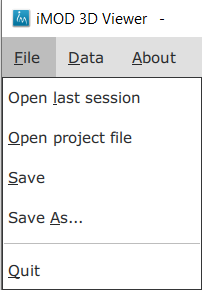
The list of open files, along with the chosen legends and IPF column mappings, can be saved into an iMOD 3D Viewer solution file. To do this, open the file menu and choose “save” or “save as”.
The resulting file can be opened with the “open project file” option.
An autosave file is automatically created or updated when opening a grid, overlay or IPF file, or when editing a legend or an IPF column mapping. This autosave file therefore reflects the state of the viewer more or less recently and is stored in the appdata directory, most likely this:
C:\\Users\\yourname\\AppData\\Roaming\\IMOD6
Loading and unloading objects
Objects can be added to the explorer
- Through the QGIS plugin ( see the manual of that)
- By opening the “data”menu and selecting “open grid” (for UGRID, IPF,or grb.disu files); “open overlay” ( for shapefiles) ; or “open point data” (for IPF files)
When the second method is used, then the objects appear in the sidebar but not in the viewer. They have to be loaded into the viewer in a second step. To do that, select the objects you want to see in the sidebar and click the “draw selected layers” button. () (Figure 3).
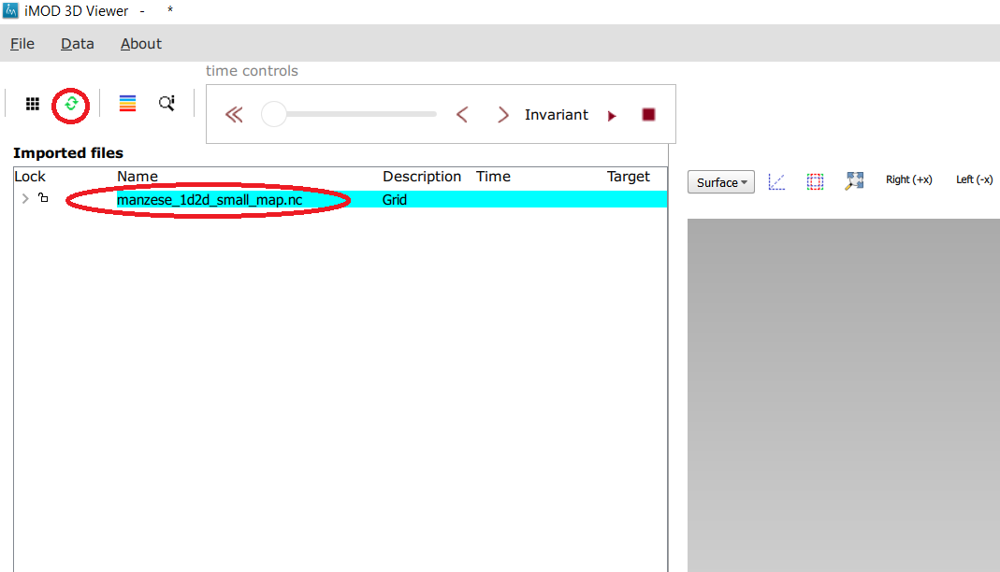
When an object is visualized in the viewer, its name appears in boldface in the explorer.
When the “draw selected layers” button () is pressed, all object that are not selected are unloaded from the viewer and are no longer bold, except if they are locked.
How to visualize data on a grid
In order to visualize a dataset on a grid, first visualize the grid itself. Then double-click on one of the datasets in the explorer.
Once visualized, the dataset will appear in boldface in the explorer (Figure 4).
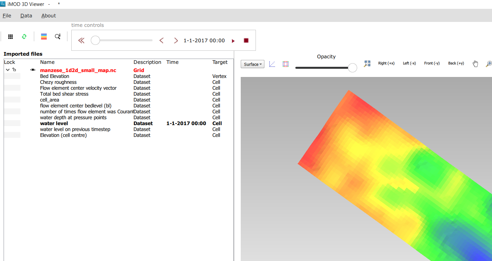
Currently, only datasets that hold scalar values associated to cells can be shown.
Locking mechanism
Top level nodes can be “locked” and grid layer nodes can be
When a node is “locked”, the object it represents is no longer automatically unloaded when the “draw selected layers” () is pressed. It can still be moved or deleted through the context menu.
To lock a node, select it and press L (lowercase or uppercase) on the keyboard. A padlock icon now appears next to it (Figure 5).
To unlock it, press O (lowercase or uppercase) on the keyboard. Now an open padlock icon appears.
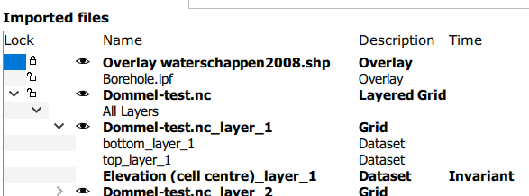
Moving objects in the treeview
Top level nodes can be moved up and down the treeview, allowing you to order the objects as you see fit.
To move an item in the treeview, select it with the mouse and then press u (up) or d (down) to move the object.
How to delete an object
To delete an object (grid, overlay or IPF cylinders) , right click on it in the explorer. Now a context menu appears. Choose the option “delete” to have the grid removed from the explorer. If you want to stop visualization of the grid without removing it from the explorer, use the redraw button instead. In the explorer, select the grids you want to be visualized, and make sure the grids you want to be unloaded are unselected. Then press redraw.
Using the time-slider
Some datasets vary through time. The iMOD 3D Viewer currently supports 2 cases:
the dataset does not have a time associated. In this case it is called “invariant” in the UI
the dataset has one or more sets of values, each one with a specific point in time associated ( so not an interval!). This time must be an actual date-time; we don’t support dimensionless time or unreferenced time.
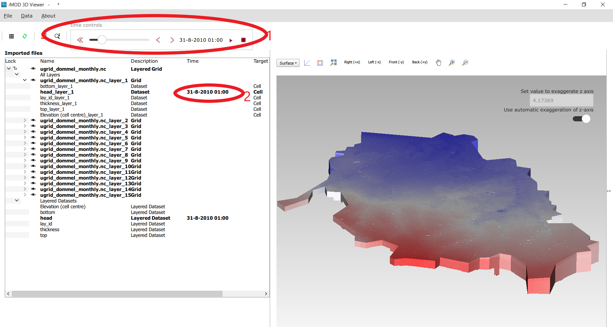
Figure 6 shows the location of tools and texts in the UI that help the user orientate in and step through the time dimension of datasets. First note the time displayed in the top toolbar (1). This is the “viewer time”, the time the viewer is currently trying to display. Since the time discretization can be different per dataset and we can show different datasets and grids simultaneously, it is not guaranteed that all datasets currently in the viewer can be shown for this specific time! Hence, in the sidebar it is shown at what time the datasets are actually diplayed (2).
The viewer time can be selected using the slider. It varies over the temporal range of all displayed datasets combined- this means that when you display another dataset, the range of the slider could change. The scaling of the slider is based on the time indexes, not on the time value itself. This means that if you have dataset values for 3 times, the slider will be divided in 2 equally sized intervals- and you would be able to select the beginning, halfway and the end of the slider, regardless of how much actual time there is between these 3 times.
When there are many times available, the resolution of the slider becomes very fine and it can then be more convenient to use the “next time”and “previous time” buttons, which increment and decrement the slider one position. There is also a “rewind” button to move the slider to its lowest value.
Finally, it is possible to animate plots using a “play” button. This moves the slider one step forward per second, or slower if updating the plot takes longer. The animation can be stopped using the “stop” button.
The decision on what time to display for each dataset is taken as follows (see Figure 7):
invariant datasets are shown regardless of the viewer time’
if a dataset has a value at the viewer time this value is shown
if it has no value at the viewer time but it has a value earlier than the viewer time then this value is shown
if it has no value at the viewer time and no value earlier than the viewer time then the first time after the viewer time is shown.
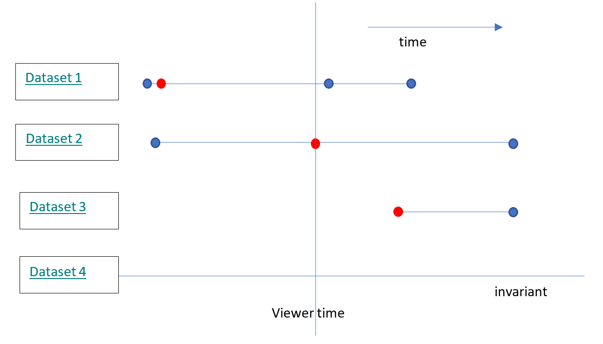
Property windows
By right-clicking on grids or datasets in the explorer, a context menu appears. In it, there is usually a “properties” option which opens a form displaying some of the properties of the object- and sometimes it allows setting some properties as well. Here are a few examples:
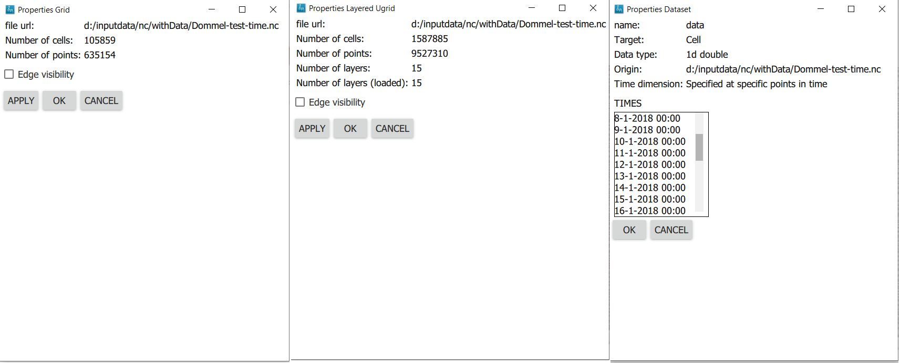
How to use the viewer
The following controls work if the mouse pointer is in the viewer area:
Spinning the mouse wheel forward: zooms in
Spinning the mouse wheel backward: zooms out
Hold shift key, while pressing the right mouse key, and move the mouse: moves the camera horizontally, corresponding to the mouse movement
Hold ctrl key, while pressing the right mouse key, and move the mouse: this rotates the camera around its lens.
Clicking on a grid: this selects or unselects the grid. When a grid is selected, its name appears in red in the explorer. Only one grid can be selected at any time. A grid must be selected in order to change its legend, or to inspect its cells values. This way of selecting a grid can be slow for larger grids. Grids can also be selected by using the context menu of the grid in the sidebar. It has an option Select in viewer.
Pressing the “zoom to extent” button ( ) in the toolbar: zooms out until all the grids that are visualized in the current viewer fit on the screen.
In the 3D viewer the following also works:
Hold the right mouse button while moving the mouse: this moves the camera in a trajectory around the grid. The direction and length of the mouse movement determine the amount of camera movement.
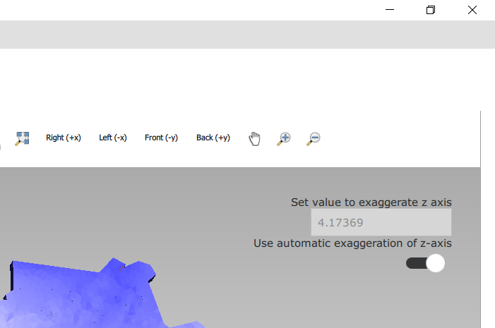
Using the toolbar buttons to control the viewer As shown in Figure 9, there are also buttons in the toolbar to control the viewer. From left to right in this figure, the buttons do the following
- zoom to extent. use this button to get a top view of the grid, zoomed out so that all of it is visible
- right(+x). use this button to position the camera so that we look in the +x direction, zoomed out so that the whole y and z range of the grid is visible.
- left(-x). use this button to position the camera so that we look in the -x direction, zoomed out so that the whole y and z range of the grid is visible.
- front(-y). use this button to position the camera so that we look in the -y direction, zoomed out so that the whole x and z range of the grid is visible.
- back(+y). use this button to position the camera so that we look in the +y direction, zoomed out so that the whole x and z range of the grid is visible.
- pan. Once this button is pressed, the camera can be dragged. Position the mouse anywhere in the viewer and keep the left mouse button pressed while dragging.
- zoom out.
- zoom in.
How to use clipping
The clipping functionality allows one to “cut off” slices of one or more grids in the 3D viewer. The internals of the grids are then exposed, allowing us to see the value of datasets or the grid geometry inside.
To use clipping, open the 3D viewer and visualize one or more grids on it. Then press the clipping button in the toolbar (Figure 10).
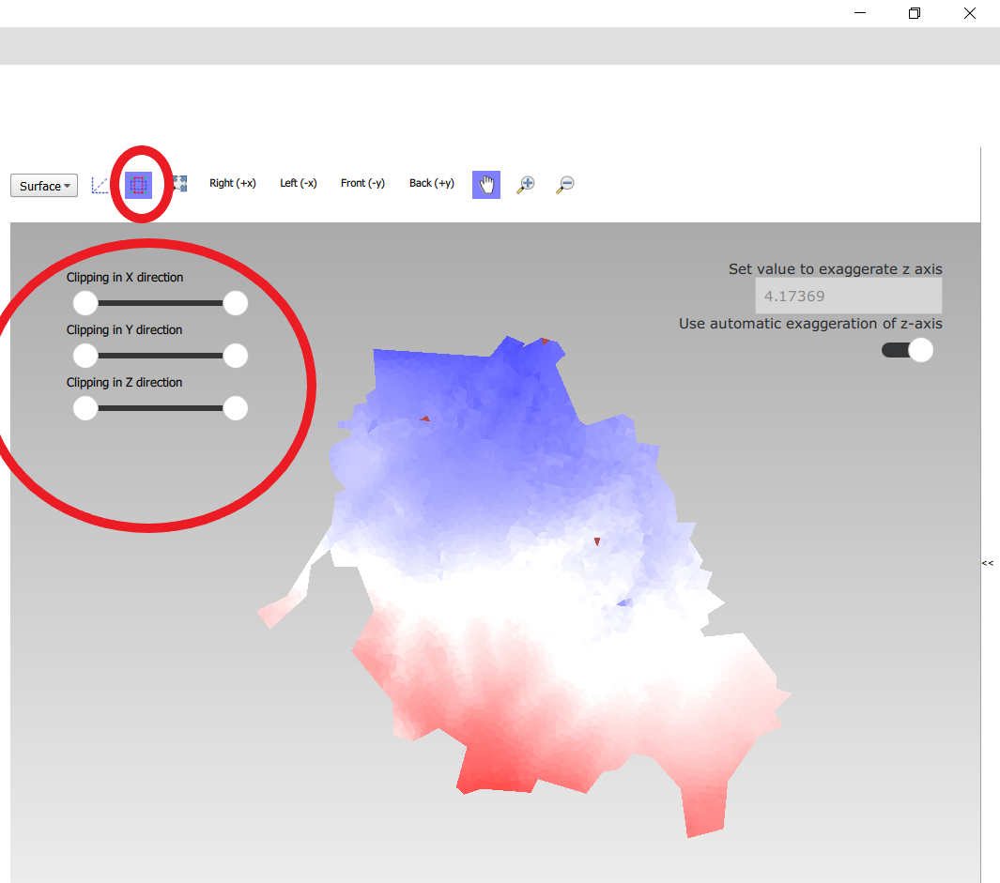
Now use the sliders to clip the model. Each slider represents the combined range of all the grids in the viewer in one direction.
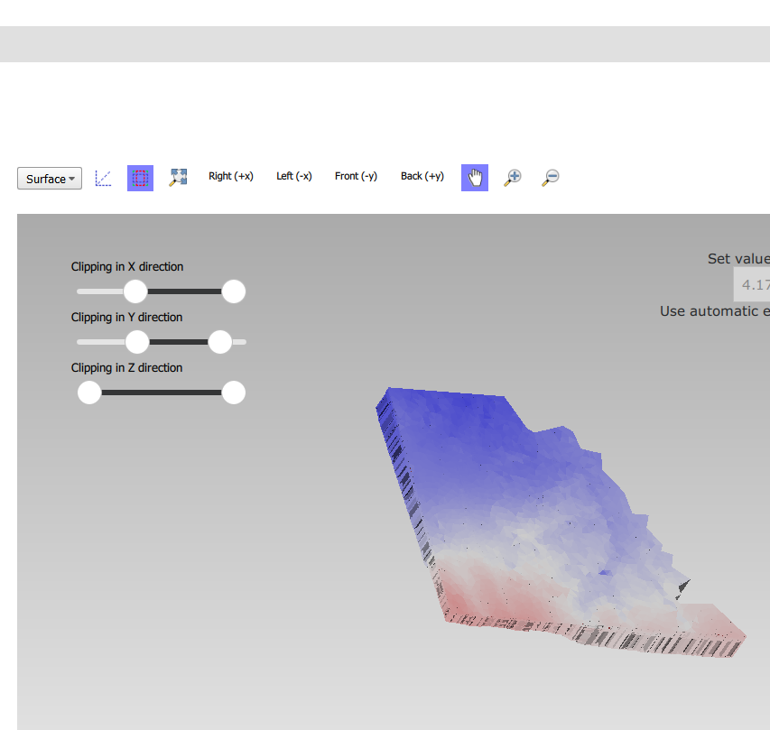
How to plot gridlines
It is possible to plot geographical gridlines on top of a grid (Figure 12). This feature only works well at near-vertical viewing angles.
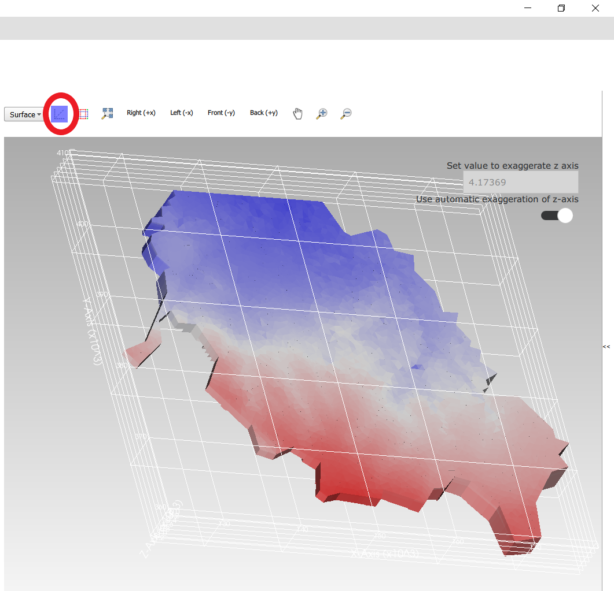
How to change the vertical exaggeration
In the 3D viewer, objects can appear to be flat when they are not, because the range in the x and y directions for geological structures is often much larger than the range in the z direction. For example, geological layers may extend for tens or hundreds of kilometers horizontally but have a thickness and height variation of tens of meters.
To fix this issue, vertical exaggeration can be applied. The same vertical exaggeration is applied to all the visible grids.
By default, a vertical exaggeration is computed from the grid geometry. It computes a vertical exaggeration such that the vertical variation becomes at least 10% of the horizontal variation.
The exaggeration factor can also be set manually. To do so, disable the Use automatic exaggeration of z-axis slider and enter the desired value in the text field above it (Figure 13).
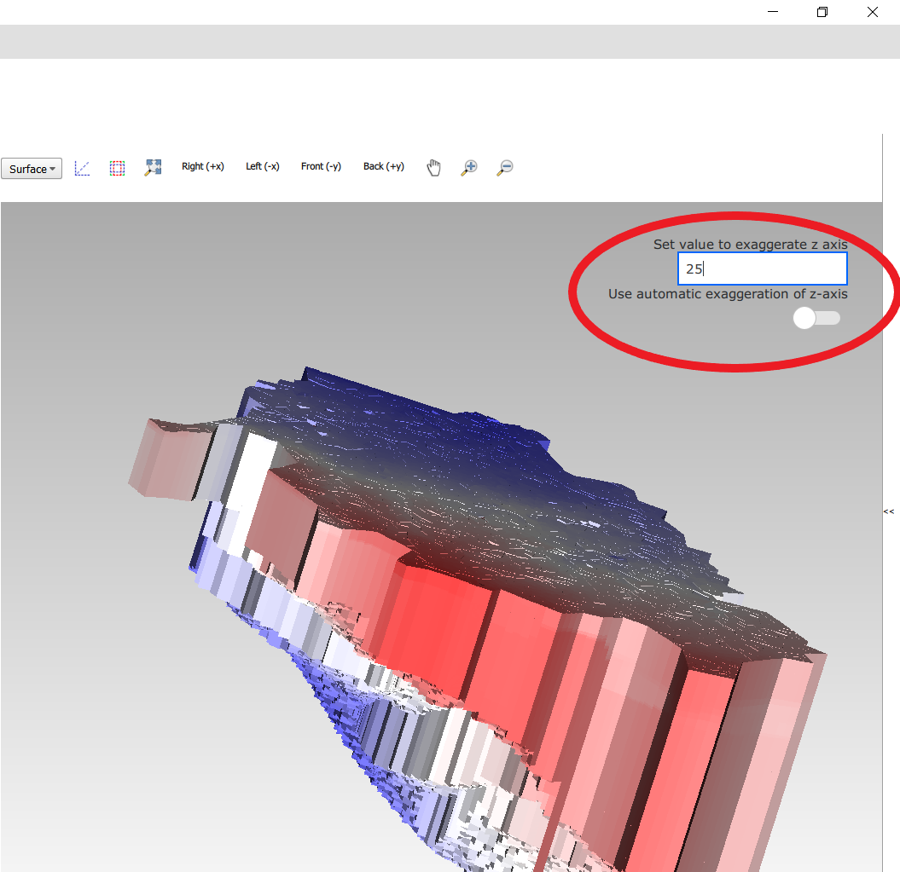
How to change the representation of a grid
In the 3D viewer, grids can be visualized as solid bodies (Figure 14); as wireframes and as point clouds. In wireframe mode, only the edges of the cells are drawn, allowing one to look inside the grid. In point cloud mode, only points corresponding to the cell centers are shown
To change the representation, use the dropdown in the viewer toolbar. Once selected, a dropdown appears where the representation can be changed. All visible grids get the selected representation.
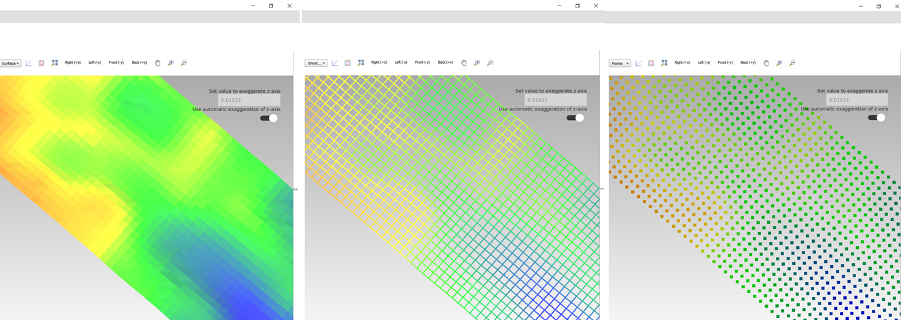
The representation can also be changed from the property window of a grid. Here some other tweaks can also be made, like highlighting cell edges or changing the opacity of the plot.
Changing the legend of a UGRID dataset, IDF or fence diagram grid.
To edit the legend of a dataset in an UGRID file, IDF file or fence diagram, it is necessary to load the legend editor form. From there, the legend can be customized.
The way to make the legend editor appear, depends on the object.
For an IDF file, or a single layer of a layered UGRID file, or a non-layered UGRID file, do the following:
- If not done yet, double click on the dataset to make it appear in the viewer
- Open the context menu of the IDF file or grid layer
- Press Select in viewer
- Press the edit legend button () .
For a layered ugid dataset (so applying on all layers at the same time)
- Right click on the data set you want to apply the legend to
- From the context menu, select Edit legend
The legend editor
The legend editor consists of 2 tabs: one for continuous legends and one for discrete ones (Figure 15).
This form is more or less self explanatory. You can choose a color scale (currently rainbow or blue-white-red). Note that it is possible to save a legend in a separate file, or to load a legend from such a file, with the Save and Load buttons.
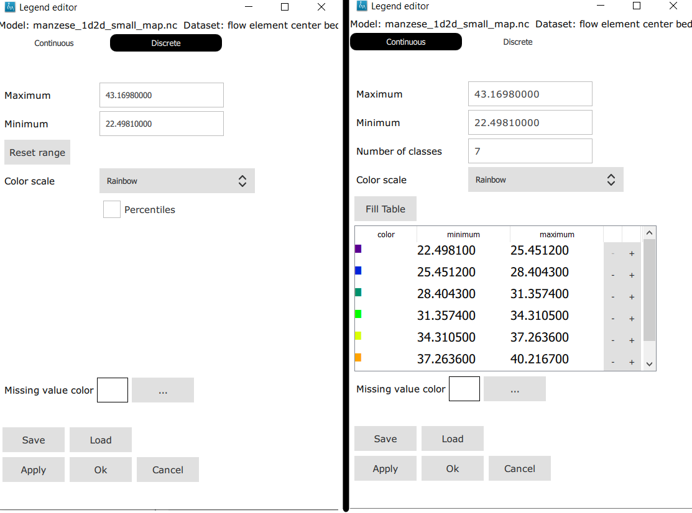
When using a percentile legend, colors are assigned to a cell based on the percentage of cells that hold a value lower than that of the current cell. The color map is distorted to reflect this. For example, when using the “heat map” legend, the lowest value is blue, the highest red, and the middle of the range is white. When using a heat map with percentiles, the white color represents not the middle of the range, but the value for which 50% of other values is smaller than itself (Figure 16).
For unstructured grids, note that the percentile calculation does not take cell area into account. For example, for a dataset with lot of small cells and a few large cells, the percentile legend will be skewed towards the values of the small cells.
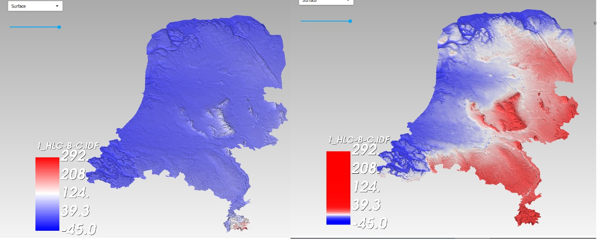
Legend sidepane
For quick reference, the legend is shown on a retractable sidepane. To open or close it, use the button highlighted in the figure below.
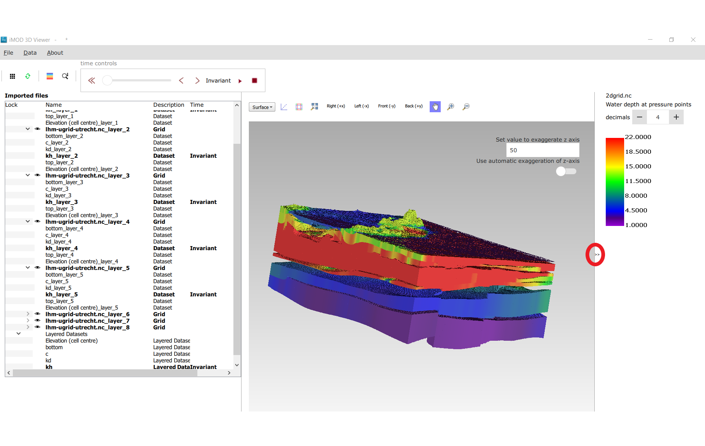
Working with fence diagrams
Fence diagrams have the same user interface as layered UGRID files. They have the same layers as the original layered UGRID they cut through, and the same datasets. Their legend can be set per-layer or for the whole fence diagram in the same way as we do for layered UGRIDs.
Working with IPF files
To visualize an IPF file, open the data menu and click on open overlay file. An open file dialog appears. Select an IPF file. As with grids, the filename is then displayed in the explorer bar, but the IPF file is not yet rendered. To render it, select the IPF’s row in the explorer bar and hit the button.
On import, the iMOD 3D Viewer will attempt to draw a vertical cylinder for each row in the IPF file’s data block (so excluding the header).
By default, a column called “x”or “X” and “y” or “Y” are used for the center of the cylinder’s top and bottom; and “top”or “TOP” and “bot” or “BOT” are used for the z-coordinates of the cylinders top and bottom, respectively.
If these columns are not present or if they contain text data, then the first 3 numerical columns are used for x, y and z, and the IPF data is plotted as points on these locations (Figure 17).
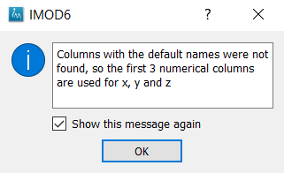
To adjust the column mapping, right click on the IPF’s row in the explorer bar and select the “Properties” menu option. Then a window appears where the column mapping can be updated (Figure 18).
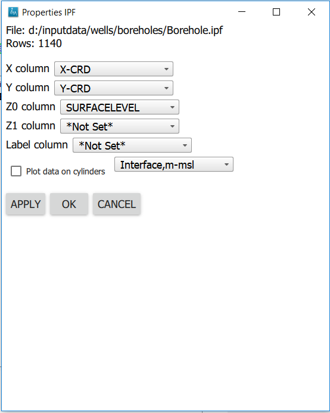
The z0 and z1 comboboxes will be used for the cylinder’s top and bottoms respectively. If the z1 column is not set, then points will be generated instead of cylinders.
The Label column combobox allows choosing a combobox to be used for labels. If not set, then no labels are shown. Otherwise the content of the selected column will be shown as a text label near the top of the column.
The IPF column mapping is serialized into solution and autosave files, and the next time a solution is loaded, the last-used column mapping will be assigned to each IPF file.
As with overlays, the color and cylinder thickness can be adjusted from the context menu of the IPF file.
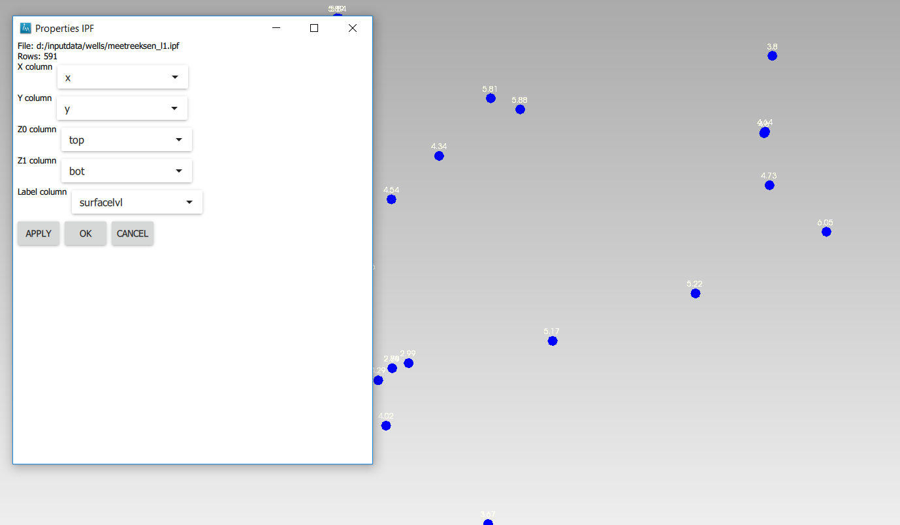
Plotting borehole data
When the IPF file contains references to additional datafiles, one for each row in the IPF file, and when these datafiles contain 1D borehole data, then this data can be plotted on the cylinders.
To do that, check the option “Plot data on cylinder” on the IPF property form (Figure 20) . Both real number data and string data can be plotted. When the checkbox is checked, a legend the appears on the form proposing a color mapping. This legend is either a continuous scale (for real numbers) or a string-to-color mapping like in the example in Figure 20. The colors can be changed by clicking on a particular color box.
These legends can be saved and loaded as well.
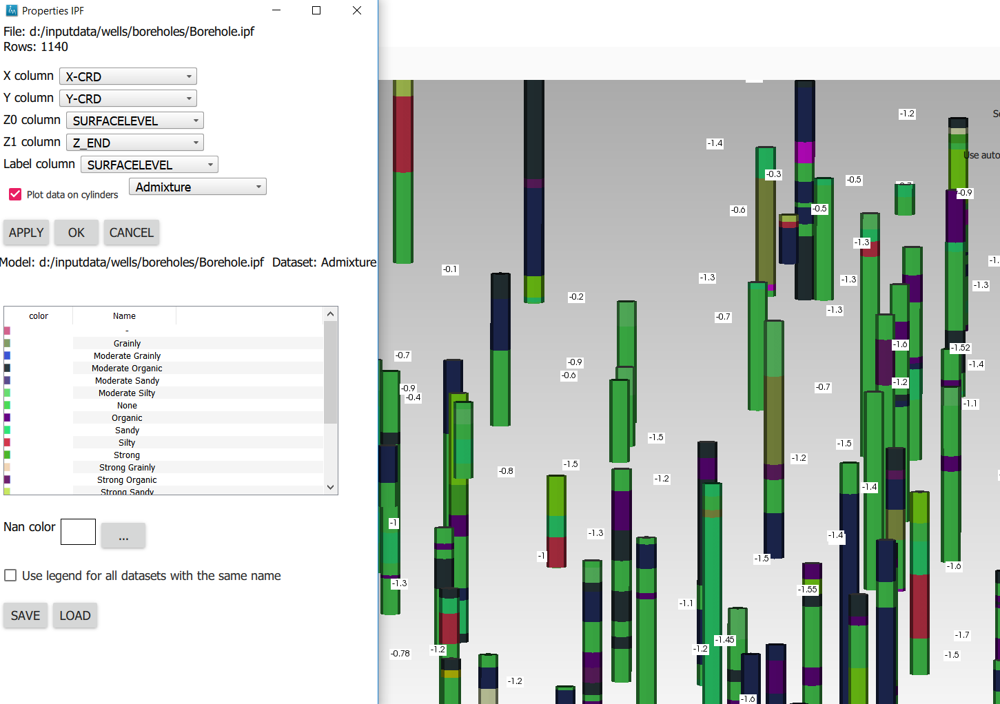
Working with IDF files
IDF file resolution
An IDF files contains a 2D structured grid, and 1 dataset with cell data. This dataset is treated for visualization purposes as if it were elevation, but it can be anything. The resolution is sometimes so high it makes the grid slow to load. Therefore, an automatic upscaling is applied when visualizing the grid, reducing the number of cells to approximately 100*100. Each upscaled cell contains an integer number of actual cells in both the x and y directions; therefore cell boundaries in the upscaled grid are guaranteed to coincide with cell boundaries in the actual grid.
The “elevation” value of each upscaled cell is taken from the actual cell that contains the upscaled cell’s center.
To increase the resolution of the IDF grid in the viewer, zoom in with the mouse wheel to the area where additional detail is required. Then press the redraw button( ).
This renders the area visible in the viewer in higher resolution, but removes the invisible parts of the grid (Figure 21{.interpreted-text role=“numref”}). To restore those, zoom out again and press again.
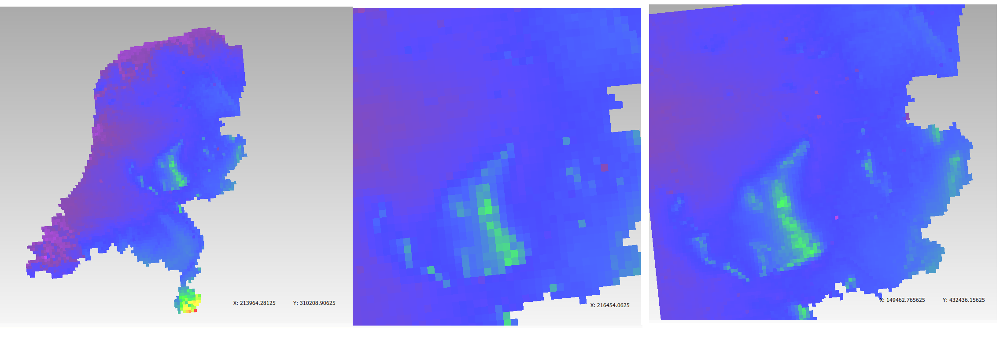
Another way to change the resolution of an IDF file is to select the IDF’s row in the explorer bar and clicking on “resolution” (Figure 22). This allows choosing a resolution of 100x100, 250x250 or 500x500 for the IPF file (Figure 23).
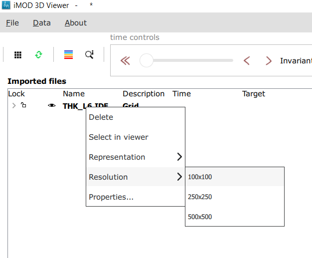
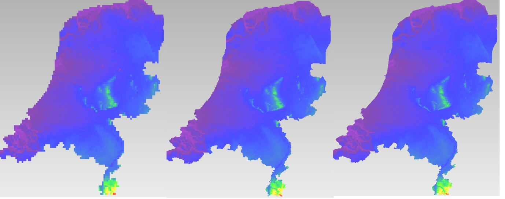
Additional representation options for IDF files
The options outlined above change the way each cell is rendered, but they do not change the underlying geometry of the cells. For IDF files we have an additional option. IDF cells are horizontal rectangles, and a surface formed by an IDF grid may look strange in the 3D viewer because these rectangles “float” at different elevations (Figure 25). Therefore, an additional option of rendering an IDF grid as triangles was added. The corner points of the triangle are the cell-centers of the rectangles, and have the elevation of that rectangle.
To change the representation of an IDF file, load the IPF file and then right-click on its entry in the explorer bar. A context menu appears (Figure 24). Choose rectangles or triangles as desired.
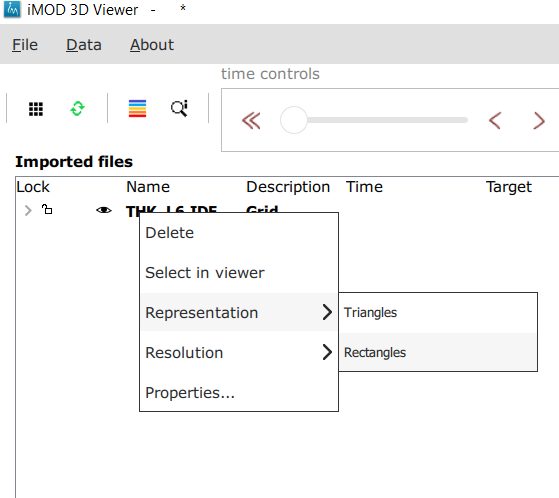
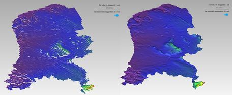
Working with shapefiles
To visualize an overlay, open the data menu and click on “open overlay file”. An open file dialog appears. Select a shapefile containing vector data. As with grids, the filename is then displayed in the explorer bar, but the overlay is not yet rendered. To render it, select the overlay’s row in the explorer bar and hit the button.
Once loaded, the line thickness and color of the overlay can be changed by right clicking on the overlay’s row in the explorer bar. This makes a context menu appear (Figure 26). There is a menu option for changing the color and one for changing the line thickness.
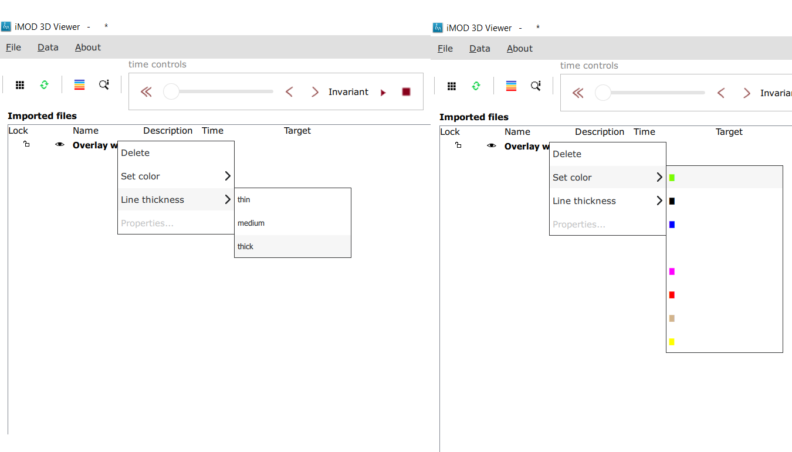
How to inspect dataset values of a cell
When we visualize a dataset, its values are used to assign a color to each cell; the value to cell mapping is defined by the legend. Hence, inspecting the plot of a dataset gives a rough idea of the value of that dataset in each cell.
To get a more precise value, it is possible to click on a cell and get a list of the values of different datasets in that cell. Take the following steps to do this (Figure 27):
- Visualize a grid in the viewer and select it.
- Press the “identify” button in the toolbar.
- Select some datasets of the selected grid in the explorer
- Click on a cell of the grid. It will be highlighted in black.
- Now a window opens showing the values of the selected datasets in the selected cell.
To end identifying, press the “identify” button again.
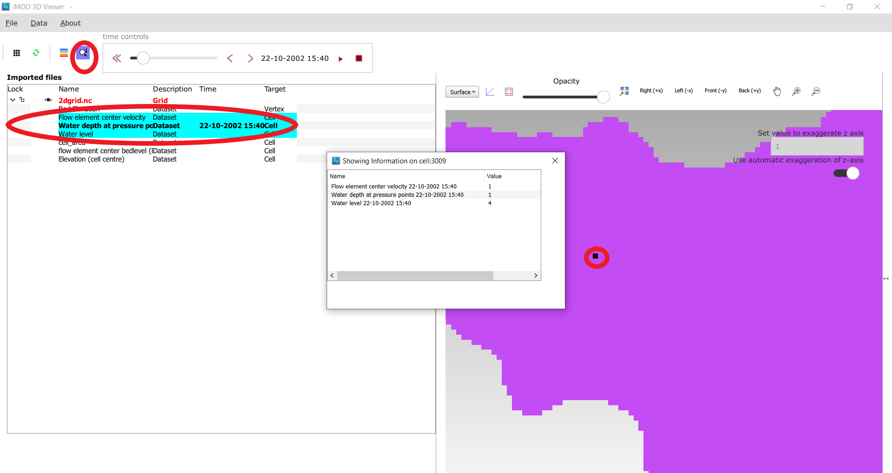
Layered UGRID
The iMOD 3D Viewer currently supports only 2D UGRID files. However, when it recognizes that datasets called layer_1_top and layer_1_bottom are present (1 being a layer number), it will create a 3D grid using the x and y coordinates from the 2D grid, and the top and bottoms from the datasets. The result is a grid with cells that have horizontal and vertical cell faces, and that can represent for example a geological layer. Additional datasets (layer_2_top and layer_2_bottom) can be provided to create additional layers. The grids created this way will all have the same x and y positions for their nodes, but due to the top and bot datasets, they are at different depths. There can be holes between the layers to represent for example aquicludes.
Each layer is shown in the explorer as a separate grid that can be loaded and unloaded independently. Properties can be assigned to each layer by listing the layer number in the dataset name. For example, we can assign a kD property to each layer by creating datasets called kD_layer_1, kD_layer_2, etcetera.
An example to convert a layered subsurface model in *.idf to a UGRID file can be found on https:/gitlab.com/deltares/imod/imod-python/-/snippets/2104179
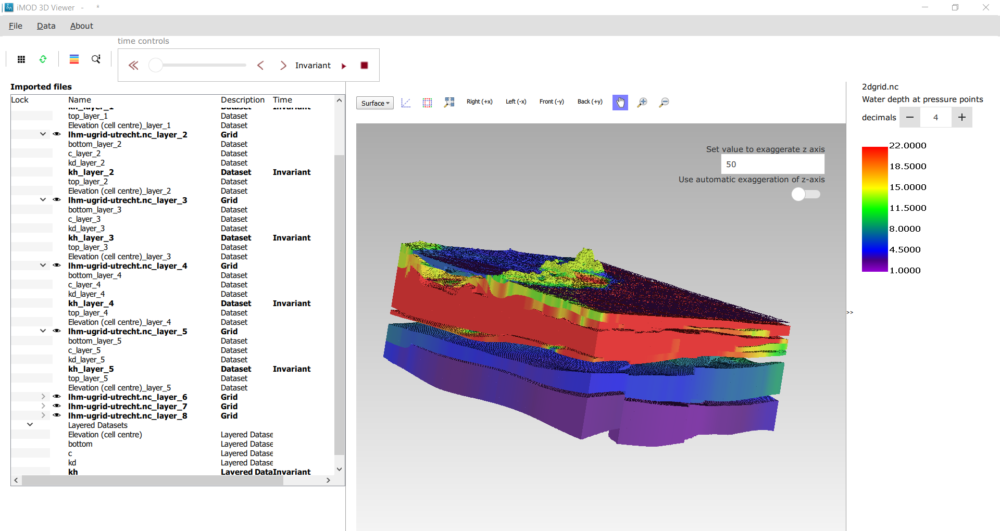
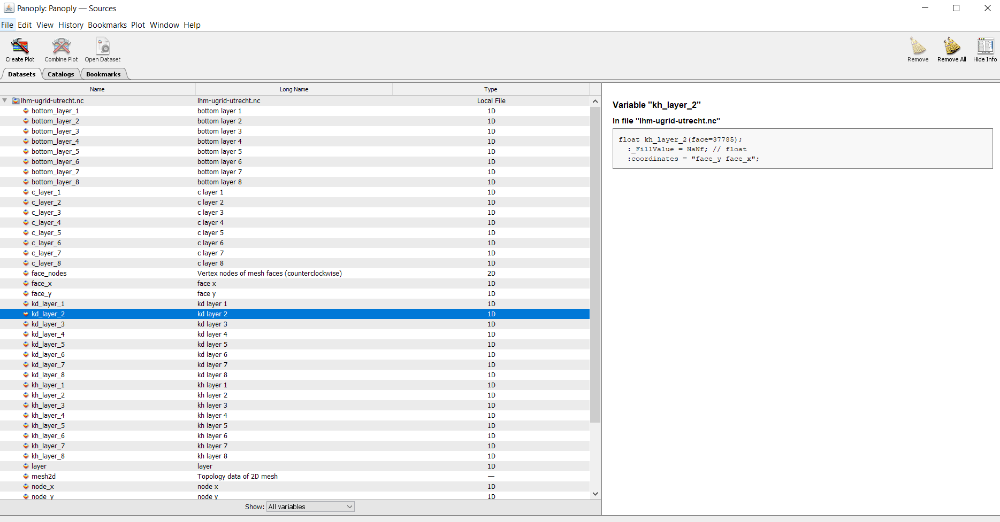